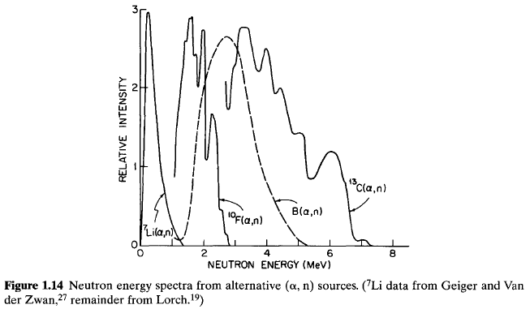

| \({\rm Charged \, particulate \, radiation}\) | \( \left\{ \begin{array}{c} { {\rm Fast \, electrons} \\ {\rm Heavy \, charged \, particles} } \end{array} \right. \) |
| \({\rm Uncharged \, radiation}\) | \( \left\{ \begin{array}{c} { {\rm Electromagnetic \, radiation} \\ {\rm Neutrons} } \end{array} \right. \) |
The energy range of interest spans over six decades, ranging from about \(10 eV\) to \(20 MeV\). (Slow neutrons are technically an exception but are included because of their technological importance.) The lower energy bound is set by the minimum energy required to produce ionization in typical materials by the radiation or the secondary products of its interaction. Radiations with energy greater than this minimum are classified as ionizing radiations. The upper bound is chosen to limit the topics in this coverage to those of primary concern in nuclear science and technology.
The main emphasis in this chapter will be the laboratory-scale sources of these radiations, which are likely to be of interest either in the calibration and testing of radiation detectors described in the following chapters, or as objects of the measurements themselves. Natural background radiation is an important additional source and is discussed separately in Chapter 20.
The radiations of interest differ in their "hardness" or ability to penetrate thicknesses of material. Although this property is discussed in greater detail in Chapter 2, it is also of considerable concern in determining the physical form of radiation sources. Soft radiations, such as alpha particles or low-energy X-rays, penetrate only small thicknesses of material. Radioisotope sources must therefore be deposited in very thin layers if a large fraction of these radiations is to escape from the source itself. Sources that are physically thicker are subject to "self-absorption," which is likely to affect both the number and the energy spectrum of the radiations that emerge from its surface.Typical thicknesses for such sources are therefore measured in micrometers. Beta particles are generally more penetrating, and sources up to a few tenths of a millimeter in thickness can usually be tolerated. Harder radiations, such as gamma rays or neutrons, are much less affected by self-absorption and sources can be millimeters or centimeters in dimension without seriously affecting the radiation properties.
Although still widely used in the literature, the curie is destined to be replaced gradually by its SI equivalent, the becquerel (\(Bq\)). At its 1975 meeting, the General Conference of Weights and Measures (GCPM) adopted a resolution declaring that the becquerel. defined as one disintegration per second, has become the standard unit of activity. Thus \[ 1 Bq = 2.703 \times 10^{-11} Ci \] Radioactive sources of convenient size in the laboratory are most reasonably measured in kilobecquerels (\(kBq\)) or megabecquerels (\(MBq\)).
It should be emphasized that activity measures the source disintegration rate, which is not synonymous with the emission rate of radiation produced in its decay. Frequently, a given radiation will be emitted in only a fraction of all the decays, so a knowledge of the decay scheme of the particular isotope is necessary to infer a radiation emission rate from its activity. Also, the decay of a given radioisotope may lead to a daughter product whose activity also contributes to the radiation yield from the source. A complete listing of radioisotope decay schemes is tabulated in Ref. 1.
The specific activity of a radioactive source is defined as the activity per unit mass of the radioisotope sample. If a pure or "carrier-free" sample is obtained that is unmixed with any other nuclear species, its specific activity can be calculated from \[ {\rm specific \, activity} = {\rm \frac{activity}{mass}} = \frac{\lambda N}{NM / A_{\nu}} = \frac{\lambda N}{M} \tag{1.2} \] where \begin{eqnarray} M &=& {\rm molecular \, weight \, of \, sample} \\ A_{\nu} &=& {\rm Avogadro's \, number (= 6.02 \times 10^{23} nuclei/mole)} \\ \lambda &=& {\rm radioisotope \, decay \, constant (= \ln 2/half\text{-}life)} \end{eqnarray} Radioisotopes are seldom obtained in carrier-free form, however, and are usually diluted in a much larger concentration of stable nuclei of the same element. Also, if not prepared in pure elemental form, additional stable nuclei may be included from other elements that are chemically combined with those of the source. For sources in which self-absorption is a problem, there is a premium on obtaining a sample with high specific activity to maximize the number of radioactive nuclei within a given thickness. From Eq. (1.2), high specific activity is most readily obtained using radionuclides with large \(\lambda\) (or small half-life).
The SI unit of energy is the joule (\(J\)). When dealing with radiation energies, the submultiple femtojoule (\(fJ\)) is more convenient and is related to the electron volt by the conversion \[ 1eV = 1.602 \times 10^{-19} J \] or \[ 1fj = 1 \times 10^{-15}J = 6.241 \times 10^{3}eV \] It is not clear to what extent the electron volt will be phased out in future usage because its physical basis and universal use in the literature are strong arguments for its continued application to radiation measurements.
The energy of an X- or gamma-ray photon is related to the radiation frequency by \[ E = h \nu \tag{1.3} \] where \begin{eqnarray} h &=& {\rm Planck's \, constant (6.626 \times 10^{-34}J \cdot s, or 4.135 \times 10^{-15} eV \cdot s)} \\ \nu &=& frequency \end{eqnarray} The wavelength \(\lambda\) is related to the photon energy by \[ \lambda = \frac{1.240 \times 10^{-6}}{E} \] where \(\lambda\) is in meters and \(E\) in \(eV\).
Because most radionuclides produced by neutron bombardment of stable materials are beta-active, a large assortment of beta emitters are readily available through production in a reactor flux. Species with many different half-lives can be obtained, ranging from thousands of years down to as short a half-life as is practical in the application. Most beta decays populate an excited state of the product nucleus, so that the subsequent de-excitation gamma rays are emitted together with beta particles in many common beta sources. Some examples of nuclides that decay directly to the ground state of the product and are therefore "pure beta emitters" are shown in Table 1.1.
Each specific beta decay transition is characterized by a fixed decay energy or \(Q\)-value. Because the energy of the recoil nucleus is virtually zero, this energy is shared between the beta particle and the "invisible" neutrino. The beta particle thus appears with an energy that varies from decay to decay and can range from zero to the "beta endpoint energy," which is numerically equal to the \(Q\)-value. A representative beta energy spectrum is illustrated in Fig. 1.1. The \(Q\)-value for a given decay is normally quoted assuming that the transition takes place between the ground states of both the parent and daughter nuclei. If the transition involves an excited state of either the parent or daughter, the endpoint energy of the corresponding beta spectrum will be changed by the difference in excitation energies. Since several excited states can be populated in some decay schemes, the measured beta particle spectrum may then consist of several components with different endpoint energies.
The internal conversion process begins with an excited nuclear state, which may be formed by a preceding process ー often beta decay of a parent species. The common method of de-excitation is through emission of a gamma ray-photon. For some excited states, gamma emission may be somewhat inhibited and the alternative of internal conversion can become significant. Here the nuclear excitation energy \(E_{ex}\) is transferred directly to one of the orbital electrons of the atom. This electron then appears with an energy given by \[ E_{e} = E_{ex} - E_{b} \tag{1.5} \] where \(E_{b}\) is its binding energy in the original electron shell.
An example of a conversion electron spectrum is shown in Fig. 1.2. Because the conversion electron can originate from any one of a number of different electron shells within the atom, a single nuclear excitation level generally leads to several groups of electrons with different energies. The spectrum may be further complicated in those cases in which more than one excited state within the nucleus is converted. Furthermore, the electron energy spectrum may also be superimposed on a continuum consisting of the beta spectrum of the parent nucleus that leads to the excited state. Despite these shortcomings, conversion electrons are the only practical laboratory-scale source of monoenergetic electron groups in the high \(keV\) to \(MeV\) energy range. Several useful radioisotope sources of conversion electrons are compiled in Table 1.2.
The alpha particles appear in one or more energy groups that are, for all practical purposes, monoenergetic. For each distinct transition between initial and final nucleus (e.g., between ground state and ground state), a fixed energy difference or \(Q\)-value characterizes the decay. This energy is shared between the alpha particle and the recoil nucleus in a unique way, so that each alpha particle appears with the same energy given by \(Q(A - 4)/A\). There are many practical instances in which only one such transition is involved and for which the alpha particles are therefore emitted with a unique single energy. Other examples such as that shown in Fig. 1.3, may involve more than one transition energy so that the alpha particles appear in groups with differing relative intensities.
Table 1.3 lists some properties of the more common radioisotope sources of alpha particles. It is no accident that most alpha particle energies are limited to between about \(4\) and \(6 MeV\). There is a very strong correlation between alpha particle energy and half-life of the parent isotope, and those with the highest energies are those with the shortest half-life. Beyond about \(6.5 MeV\), the half-life can be expected to be less than a few days, and therefore the source is of very limited utility. On the other hand, if the energy drops below \(4 MeV\), the barrier penetration probability becomes very small and the half-life of the isotope is very large. If the half-life is exceedingly long, the specific activity attainable in a practical sample of the material becomes very small and the source is of no interest because its intensity is too low. Probably the most common calibration source for alpha particles is \(^{241}Am\), and an example of its application to the calibration of silicon solid-state detectors is shown in Fig. 11.15.
Because alpha particles lose energy rapidly in materials, alpha particle sources that are to be nearly monoenergetic must be prepared in very thin layers. In order to contain the radioactive material, typical sources are covered with a metallic foil or other material that must also be kept very thin if the original energy and monoenergetic nature of the alpha emission are to be preserved.
All heavy nuclei are, in principle, unstable against spontaneous fission into two lighter fragments. For all but the extremely heavy nuclei, however, the process is inhibited by the large potential barrier that must be overcome in the distortion of the nucleus from its original near-spherical shape. Spontaneous fission is therefore not a significant process except for some transuranic isotopes of very large mass number. The most widely used example is \(^{252}Cf\), which undergoes spontaneous fission with a half-life (if it were the only decay process) of 85 years. However, most transuranic elements also undergo alpha decay, and in \(^{252}Cf\) the probability for alpha emission is considerably higher than that for spontaneous fission. Therefore, the actual half-life for this isotope is 2.65 years, and a sample of 1 microgram of \(^{252}Cf\) will emit \(1.92 \times 10^{7}\) alpha particles and undergo \(6.14 \times 10^{5}\) spontaneous fissions per second.
Each fission gives rise to two fission fragments, which, by the conservation of momentum, are emitted in opposite directions. Because the normal physical form for a spontaneous fission source is a thin deposit on a flat backing, only one fragment per fission can escape from the surface, whereas the other is lost by absorption within the backing. As described later in this chapter, each spontaneous fission in \(^{252}Cf\) also liberates a number of fast neutrons.
The fission fragments are medium-weight positive ions with a mass distribution illustrated in Fig. 1.4a The fission is predominantly asymmetric so that the fragments are clustered into a "light group" and "heavy group," with average mass numbers of 108 and 143. The fragments appear initially as positive ions for which the net charge approaches the atomic number of the fragment. As the fragment slows down by interacting with the matter through which it passes, additional electrons are picked up by the ion, reducing its effective charge.
The energy shared by the two fragments averages about \(185 MeV\). The distribution of this energy is also asymmetric with the light fragment receiving the greater fraction. A plot of their initial energy distribution is shown in Fig. 1.4b. Because they also lose energy readily in solid materials, self-absorption and energy loss of the fragments are important considerations unless the source is prepared in a very thin layer. The type of degradation of a fission fragment energy spectrum observed from thicker sources (for the case of neutron-induced \(^{235}U\) fission) is illustrated in Fig. 14.7
Because nuclear states have very well-defined energies, the energies of gamma rays emitted in state-to-state transitions are also very specific. The gamma rays from any one transition are nearly monoenergetic, and the inherent line width of the photon energy distribution is nearly always small compared with the energy resolution of any of the detectors described later in this text. A measurement of the detector response is therefore indicative of its own limiting resolution rather than any variation in the incident gammaray energy.
The common gamma-ray sources based on beta decay are generally limited to energies below about \(2.8 MeV\). One nuclide that can be useful as a potential source for gamma rays of higher energy is \(^{56}Co\). The decay scheme of this isotope, which includes both electron capture and pf decay, gives rise to a complex spectrum of gamma rays whose energies extend to as high as \(3.55 MeV\). The short half-life of \(^{56}Co\) (77 days), however, largely limits its use to facilities with access to accelerators necessary to carry out its production through the \(^{56}Fe(p,n)\) reaction. Another possible radioisotope for high-energy calibrations is \(^{16}N\), with gamma rays of \(6.13\) and \(7.11 MeV\) emitted through its \(\beta^{-}\) decay to \(^{16}O\). gain, the very short half-life of just over 7 seconds requires the local production of this isotope in reactors or accelerators, which can be employed with a continuous circulation loop to provide a steady-state source of this radionuclide.
Gamma-ray reference sources are an essential accessory in any radiation measurements laboratory in which gamma-ray measurements are carried out. They normally consist of samples of radioisotopes of a few microcuries (around \(10^{5} Bq\)) encased in plastic disks or rods. The thickness of the encapsulation is generally large enough to stop any particulate radiation from the decay of the parent nucleus, and the only primary radiation emerging from the surface is the gamma radiation produced in the daughter decay. However, secondary radiations such as annihilation photons or bremsstrahlung can be significant at times (see below). Although the radiation hazard of such sources is minimal, the gamma-ray emission rate is sufficiently high to permit ready energy calibration of most types of gamma-ray detectors.
If the sources are to be used to carry out accurate efficiency calibration, their absolute activity must also be known. In these cases, the radioisotope deposits are generally prepared on much thinner backings with a minimum of overlying cover to reduce gamma-ray attenuation and scattering within the source structure. External absorbers must then be used to eliminate any particulate emission if its presence will interfere with the application.
Another possibility is the reaction \[ ^{4}_{2}\alpha + ^{13}_{6}C \rightarrow ^{16}_{8}O* + ^{1}_{0}n \] Here the product nucleus \(^{16}O\) can be formed in an excited state at \(6.130 MeV\) above the ground state and with a lifetime of about \(2 \times 10^{-11} s\). This lifetime is sufficiently long to eliminate almost all Doppler effects, and the resulting \(6.130 MeV\) gamma-ray photons are essentially monoenergetic.
Both the above reactions can be exploited by combining a radioisotope that decays by alpha emission with the appropriate target material (either \(^{9}Be\) or \(^{13}C\)). Because sources of this type are more commonly used to produce neutrons, further discussion of the choice of alpha emitter and other aspects of the source design will be postponed until the following section on neutron sources. Because most alpha particles do not lead to a reaction before losing their energy in the target material, large activities of the alpha emitter must be used to produce a gamma-ray source of practical intensity. For example, a typical source fabricated from \(6 \times 10^{9} Bq\) of \(^{238}PuO_{2}\) and \(200 mg\) of isotopically separated \(^{13}C\) produces a \(6.130 MeV\) gamma-ray yield of \(770 \, photons/s\).
Gamma rays are also commonly emitted following the absorption of thermal neutrons by typical nuclei. Sources of thermal neutrons used in the production of gamma rays can be intense beams from nuclear reactors or accelerator facilities, or weaker fluxes from moderated radioisotope sources of neutrons. These "neutron-capture gamma rays" typically have energy ranging as high as \(9 MeV\), and data on the probabilities of emission per neutron capture that can be useful for detector calibrations are available from various sources (e.g., Ref. 13).
For monoenergetic electrons that slow down and stop in a given material, the bremsstrahlung energy spectrum is a continuum with photon energies that extend as high as the electron energy itself. The shape of a typical spectrum produced by monoenergetic electrons is shown in Fig. 1.6. The emission of low-energy photons predominates, and the average photon energy is a small fraction of the incident electron energy. Because these spectra are continua, they cannot be applied directly to the energy calibration of radiation detectors.
The shape of the energy spectrum from an X-ray tube can be beneficially altered by filtration or passage through appropriate absorber materials. Through the use of absorbers that preferentially remove the lower-energy photons, a peaked spectrum can be produced that, although far from monoenergetic, can be useful in the energy calibration of detectors whose response changes only gradually with energy. Some examples of filtered spectra from X-ray tubes are plotted in Fig. 1.7. At lower energies, the abrupt change in filter transmission at its \(K\)-absorption edge (see Chapter 2) can produce a prominent peak at the corresponding energy in the filtered spectrum.
Bremsstrahlung is also produced by other sources of fast electrons, including beta particles. Therefore, some bremsstrahlung photons are generated by any beta-active isotope encapsulated to stop the beta particles. Some examples of bremsstrahlung spectra from specific isotopes are plotted in Fig. 10.5.
In addition to bremsstrahlung, characteristic X-rays (see following section) are also produced when fast electrons pass through an absorber. Therefore, the spectra from X-ray tubes or other bremsstrahlung sources also show characteristic X-ray emission lines superimposed on the continuous bremsstrahlung spectrum.
Because their energy is greatest, the \(K\)-series X-rays are generally of most practical significance. Their energy increases regularly with atomic number of the element and is, for example, about \(1 keV\) for sodium with \(Z = 11\), \(10 keV\) for gallium with \(Z = 31\), and \(100 keV\) for radium with \(Z = 88\). The L series X-rays do not reach \(1 keV\) until \(Z = 28\) and \(10 keV\) at \(Z = 74\). Extensive tables of precise characteristic X-rays can be found in Ref. 1. Because the energy of the characteristic X-ray is unique to each individual element, they are often used in the elemental analysis of unknown samples (see Fig. 13.17).
For an atom in an excited state, the ejection of an Auger electron is a competitive process to the emission of characteristic X-rays. The fluorescent yield is defined as the fraction of all cases in which the excited atom emits a characteristic X-ray photon in its de-excitation. Values for the fluorescent yield are often tabulated as part of spectroscopic data.
A large number of different physical processes can lead to the population of excited atomic states from which characteristic X-rays originate. In general, the relative yields of the \(K\), \(L\), and subsequent series will depend on the excitation method, but the energy of the characteristic photons is fixed by the basic atomic binding energies. We list below those excitation mechanisms that are of most practical importance for compact laboratory sources of characteristic X-rays.
Internal conversion is another nuclear process that can lead to characteristic X-rays. As defined earlier in this chapter, internal conversion results in the ejection of an orbital electron from the atom leaving behind a vacancy. Again, it is the \(K\)-electrons that are most readily converted, and therefore the \(K\)-series characteristic X-rays are the most prominent. Because gamma-ray de-excitation of the nuclear state is always a competing process to internal conversion, radioisotope sources of this type usually emit gamma rays in addition to the characteristic X-rays. The conversion electrons may also lead to a measurable bremsstrahlung continuum, particularly when their energy is high.
In Table 13.2, some examples are given of radioisotopes that involve either electron capture or internal conversion and are possible sources of characteristic X-rays. In all these examples, the yield of high-energy gamma rays from a nuclear transition is large compared with that of the characteristic X-rays. If a pure X-ray source free of gamma-ray contamination is required, a radioisotope that decays by electron capture leading directly to the ground nuclear state of the daughter must be chosen.Table 1.4 gives some examples for the lower energy range. Of these, \(^{55}Fe\) is most widely used because of its convenient half-life and high available specific activity. It is very nearly a pure source of manganese \(K\)-series X-rays at about \(5.9 keV\), and the inner bremsstrahlung associated with the electron capture process is very weak.
Self-absorption is a significant technical problem in the preparation of radioisotope X-ray sources. As the thickness of the radioisotope deposit is increased, the X-ray flux emerging from its surface approaches a limiting value because only those atoms near the surface can contribute photons that escape. The number of emitting atoms within a given distance of the deposit surface is maximized by increasing the specific activity of the radioisotope, and carrier-free samples will exhibit the maximum attainable source intensity per unit area.
The energy of the X-rays emitted depends on the choice of target material. Targets with low atomic number result in soft characteristic X-rays, and high-\(Z\) targets produce harder or higher energy X-rays. The incident radiation must have a higher energy than the maximum photon energy expected from the target, because the excited states leading to the corresponding atomic transition must be populated by the incident radiation.
As one example, the incident radiation may consist of X-rays generated in a conventional X-ray tube. These X-rays may then interact in the target through photoelectric absorption, and the subsequent de-excitation of the target ions creates their characteristic X-ray spectrum. In this case, the process is called X-ray fluorescence. Although the characteristic X-ray spectrum can be contaminated by scattered photons from the incident X-ray beam, this component can be kept below about 10 or 20% of the total photon yield with proper choice of target and geometry.
As an alternative to bulky X-ray tubes, radioisotopes that emit low-energy photons may also be used as the source of the excitation. An example is \(^{241}Am\), in which gamma rays of \(60 keV\) energy are emitted in 36% of the decays. Characteristic X-ray sources using this isotope for excitation of targets in the geometry shown in Fig. 1.9 are currently available using up to \(10 mCi\) of \(^{241}Am\) activity.
Another method of exciting the target is through the use of an external electron beam. For targets of low atomic number, acceleration potentials of only a few thousand volts are required so that relatively compact electron sources can be devised. In the case of electron excitation, the characteristic X-ray spectrum from the target will be contaminated by the continuous bremsstrahlung spectrum also generated by interactions of the incident electrons in the target. For thin targets, however, the bremsstrahlung photons are preferentially emitted in the forward direction, whereas the characteristic X-rays are emitted isotropically. Placing the exit window at a large angle (\(120-180^{\circ}\)) with respect to the incident electron direction will therefore minimize the bremsstrahlung contamination.
The incident radiation in Fig. 1.8 can also consist of heavy charged particles. Again, the interactions of these particles in the target will give rise to the excited atoms necessary for the emission of characteristic X-rays. For compact and portable sources, alpha particles emitted by radioisotope sources are the most convenient source of the incident particles. Of the various potential alpha emitters, the most useful are \(^{210}Po\) and \(^{244}Cm\) because of their (see Table 1.5). Alpha particle excitation avoids the complication of bremsstrahlung associated convenient half-lives and relative freedom from contaminant electromagnetic radiation with electron excitation and is therefore capable of generating a relatively "clean" characteristic X-ray spectrum. A cross-sectional diagram of a typical source of this type is shown in Fig. 1.9. The X-ray yields into one steradian solid angle per \(mC\)i (\(37 MBq\)) of \(^{244}Cm\) ranges from \(1.7 \times 10^{5} \, photons/s\) for a beryllium target to about \(10^{4} \, photons/ second\) for targets of higher \(Z\) (Ref. 17).
The most common spontaneous fission source is \(^{252}Cf\). Its half-life of 2.65 years is long enough to be reasonably convenient, and the isotope is one of the most widely produced of all the transuranics. The dominant decay mechanism is alpha decay, and the alpha emission rate is about 32 times that for spontaneous fission. The neutron yield is \(0.116 n/s\) per \(Bq\), where the activity is the combined alpha and spontaneous fission decay rate. On a unit mass basis, \(2.30 \times 10^{6} n/s\) are produced per microgram of the sample. Compared with the other isotopic neutron sources described below, \(^{252}Cf\) sources involve very small amounts of active material (normally of the order of micrograms) and can therefore be made in very small sizes dictated only by the encapsulation requirements.
The energy spectrum of the neutrons is plotted in Fig. 1.10. The spectrum is peaked between \(0.5\) and \(1 MeV\), although a significant yield of neutrons extends to as high as \(8\) or \(10 MeV\). The shape of a typical fission spectrum is approximated by the expression \[ \frac{dN}{dE} = E^{1/2}e^{-E/T} \tag{1.6} \] For the spontaneous fission of \(^{252}Cf\), the constant \(T\) in Eq. (1.6) has a value of \(1.3 MeV\) (Ref. 19). In addition to about 3.8 neutrons on average, each fission in \(^{252}Cf\) also results in an average of about 9.7 emitted gamma-ray photons. Most of these (> 85%) are relatively high-energy prompt gamma rays that are emitted within the first nanosecond following the fission event.
The neutron yield from this reaction when a beam of alpha particles strikes a target that is thick compared with their range is plotted in Fig. 1.11. Most of the alpha particles simply are stopped in the target, and only 1 in about \(10^{4}\) reacts with a beryllium nucleus. Virtually the same yield can be obtained from an intimate mixture of the alpha particle emitter and beryllium, provided the alpha emitter is homogeneously distributed throughout the beryllium in a small relative concentration. All the alpha emitters of practical interest are actinide elements, and investigations have shown that a stable alloy can be formed between the actinides and beryllium of the form \(MBe_{13}\), where \(M\) represents the actinide metal. Most of the sources described below therefore are metallurgically prepared in the form of this alloy, and each alpha particle has an opportunity to interact with beryllium nuclei without any intermediate energy loss.

Some of the common choices for alpha emitters and properties of the resulting neutron sources are listed in Table 1.6. Several of these isotopes, notably \(^{226}Ra\) and \(^{227}Ac\), lead to long chains of daughter products that, although adding to the alpha particle yield, also contribute a large gamma-ray background. These sources are therefore inappropriate for some applications in which the intense gamma-ray background interferes with the measurement. Also, these \(Ra\text{-}Be\) and \(Ac\text{-}Be\) sources require more elaborate handling procedures because of the added biological hazard of the gamma radiation.
The remaining radioisotopes in Table 1.6 involve simpler alpha decays and the gammaray background is much lower. The choice between these alternatives is made primarily on the basis of availability, cost, and half-life. Because the physical size of the sources is no longer negligible, one would like the half-life to be as short as possible, consistent with the application, so that the specific activity of the emitter is high.
The \(^{239}Pu/Be\) source is probably the most widely used of the \((\alpha, n)\) isotopic neutron sources. However, because about \(16 g\) of the material is required for \(1 Ci (3.7 \times 10^{10} Bq)\) of activity, sources of this type of a few centimeters in dimension are limited to about \(10^{7} n/s\). In order to increase the neutron yield without increasing the physical source size, alpha emitters with higher specific activities must be substituted. Therefore, sources incorporating \(^{241}Am\) (half-life of 433 years) and \(^{238}Pu\)(half-life of 87.4 years) are also widely used if high neutron yields are needed. Sources utilizing \(^{244}Cm\) (half-life of 18 years) represent a near ideal compromise between specific activity and source lifetime, but the isotope is not always widely available.
The neutron energy spectra from all such alpha/Be sources are similar, and any differences reflect only the small variations in the primary alpha energies. A plot of the spectrum from a \(^{239}Pu/Be\) source is shown in Fig. 1.12. The various peaks and valleys in this energy distribution can be analyzed in terms of the excitation state in which the \(^{12}C\) product nucleus is left. The alpha particles lose a variable amount of energy before reacting with a beryllium nucleus, however, and their continuous energy distribution washes out much of the structure that would be observed if the alpha particles were monoenergetic. For sources that contain only a few grams of material, the spectrum of neutrons that emerges from the source surface is essentially the same as that created in the \((\alpha,n )\) reactions. For larger sources, the secondary processes of neutron scattering within the source, \((n, 2n)\) reactions in beryllium, and \((n, fission)\) events within the plutonium or other actinide can introduce some dependence of the energy spectrum on the source size.
Because large activities of the actinide isotope are involved in these neutron sources, special precautions must be taken in their fabrication to ensure that the material remains safely encapsulated. The actinide-beryllium alloy is usually sealed within two individually welded stainless steel cylinders in the arrangement shown in Fig. 1.13. Some expansion space must be allowed within the inner cylinder to accommodate the slow evolution of helium gas formed when the alpha particles are stopped and neutralized.

When applied to the efficiency calibration of detectors, some caution must be used in assuming that the neutron yield for these sources decays exactly as the half-life of the principal actinide alpha emitter. Small amounts of contaminant alpha activity, present in either the original radioisotope sample or produced through the decay of a precursor, can influence the overall neutron yield. For example, many \(^{239}Pu/Be\) sources have been prepared from plutonium containing small amounts of other plutonium isotopes. The isotope 241P~ is particularly significant, because it beta decays with a half-life of 13.2 years to form \(^{241}Am\), an alpha emitter. The neutron yield of these sources can therefore gradually increase with time as the \(^{241}Am\) accumulates in the source. An original \(^{241}Pu\) isotopic fraction of 0.7% will result in an initial growth rate of the neutron yield of 2% per year
A number of other alpha-particle-induced reactions have occasionally been employed as neutron sources, but all have a substantially lower neutron yield per unit alpha activity compared with the beryllium reaction. Some of the potential useful reactions are listed in Table 1.7. Because all the \(Q\)-values of these reactions are less than that of the beryllium reaction, the resulting neutron spectra shown in Fig 1.14 have a somewhat lower average energy. In particular, the \(^{7}Li (\alpha,n )\) reaction with its highly negative \(Q\)-value leads to a neutron spectrum with a low \(0.5 MeV\) average energy that is especially useful in some applications. Details of this spectrum shape are given in Ref. 28.

| \(Q{\rm \text{-}value}\) | |
|---|---|
| \(^{9}_{4}Be + h\nu \rightarrow ^{8}_{4}Be + ^{1}_{0}n\) | \(-1.666MeV\) |
| \(^{2}_{1}H + h\nu \rightarrow ^{1}_{1}H + ^{1}_{0}n\) | \(-2.226MeV\) |
One decided advantage of photoneutron sources is that if the gamma rays are monoenergetic, the neutrons are also nearly monoenergetic. The relatively small kinematic spread obtained from Eq. (1.7) by letting the angle \(\theta\) vary between 0 and \(\pi\) broadens the neutron energy spectrum by only a few percent. For large sources, the spectrum is also somewhat degraded by the scattering of some neutrons within the source before their escape.
The main disadvantage of photoneutron sources is the fact that very large gamma-ray activities must be used in order to produce neutron sources of attractive intensity. For the type of source sketched in Fig. 1.15, only about 1 gamma ray in \(10^{5}\) or \(10^{6}\) interacts to produce a neutron, and therefore the neutrons appear in a much more intense gamma-ray background. Some of the more common gamma-ray emitters are \(^{226}Ra\), \(^{124}Sb\), \(^{72}Ga\), \(^{140}La\), and \(^{24}Na\). Some properties and energy spectra of corresponding photoneutron sources are shown in Table 1.8 and Fig. 1.16. For many of these sources, the half-lives of the gamma emitters are short enough to require their reactivation in a nuclear reactor between uses
| \(Q\)-value | ||
| The \(D\)-\(D\) reaction | \(^{2}_{1}H + ^{2}_{1}H \rightarrow ^{3}_{2}He + ^{1}_{0}n\) | \(+3.26 MeV\) |
| The \(D\)-\(T\) reaction | \(^{2}_{1}H + ^{3}_{1}H \rightarrow ^{4}_{2}He + ^{1}_{0}n\) | \(+17.6 MeV\) |
A number of other charged-particle-induced reactions that involve either a negative \(Q\)-value or a target with higher atomic number are also applied to neutron generation. Some common examples are \(^{9}Be(d, n)\), \(^{7}Li(p, n)\), and \(^{3}H(p, n)\). In these cases, a higher incident particle energy is required, and large accelerator facilities such as cyclotrons or Van de Graaf accelerators are needed to produce the incident particle beam.